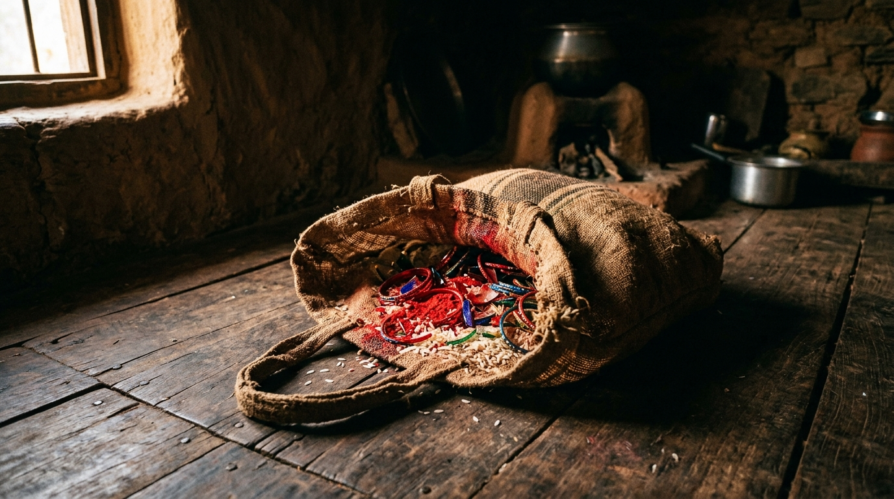
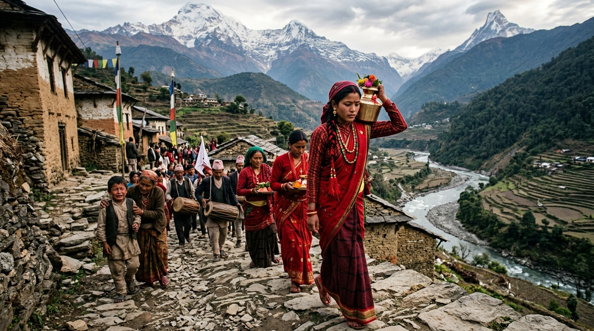
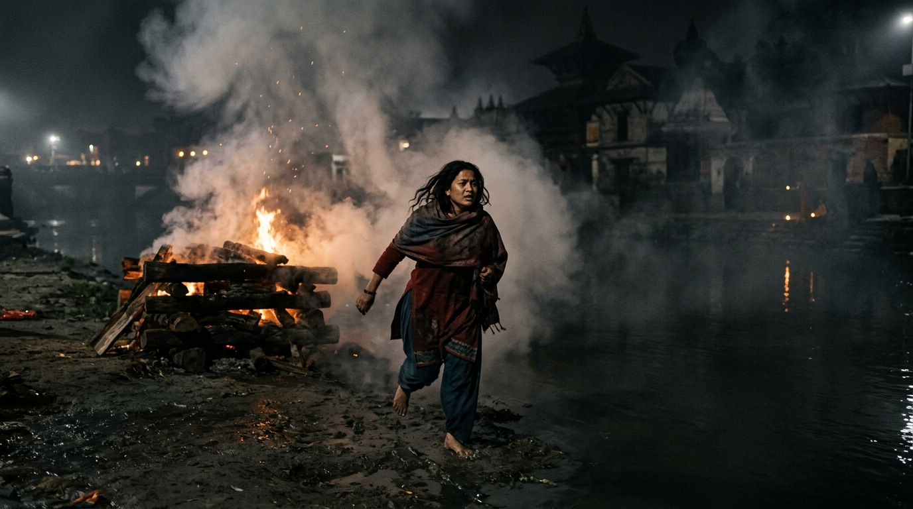

A Nepali Historical Story
Jhola
झोला
Scene I
The Jhola
The morning fog was slowly disappearing from the green hills when a loud cry came from a small house in the village. Ghanashyam, an old man, had died. His body was lying quietly on a bed made of straw. His face had already lost its color, and his hands were tied together with white thread.
In the room next to him sat his young wife, Kanchi. She was only twenty years old. She held her little son tightly against her chest while people came in and out of the house. Her eyes were red from crying, but now she was completely quiet. She knew her husband was gone, but what scared her more was what would happen to her next.
One by one, the older women of the village entered the room. Nobody asked Kanchi what she wanted. Nobody told her that everything would be okay. Instead, one of the women brought out a simple woven bag. It was called a jholla.
They slowly started putting things inside it: red powder, a broken glass bangle, grains of rice, and a little oil. These were supposed to go with Kanchi on her final journey. According to the old tradition followed by the village, a wife was expected to die with her husband. They believed that doing this would make her a Sati and bring honor to the family.
Kanchi stared at the jholla. It was only a small bag, but to her it felt much bigger. Every item placed inside it reminded her that everyone had already decided her future. She looked down at her son and pulled him even closer.

Scene II
The Walk to the River
By the afternoon, the whole village was ready. Four men lifted Ghanashyam's body onto a bamboo stretcher and started walking down the rocky path toward the river. The villagers followed behind them while repeating prayers. Kanchi was made to walk with the crowd, wearing the same red clothes that once represented her marriage.
Her little son followed her, crying, “Ama! Ama!” He tried to run toward her, but some of the older men stopped him.
“Ama! Please don’t leave me!”
Kanchi turned around when she heard him. For a moment, she did not see the crowd, the priests, or the people watching her. She only saw her child crying for his mother. She wanted to run back and hold him, but there were people all around her.
The closer they came to the river, the louder the water became. Kanchi could also smell smoke from the torches being carried in front of her. With every step, she knew she was getting closer to the place where they planned to burn her alive.
She looked around at the people she had known for years. She hoped someone would say something. She hoped at least one person would tell them to stop. But nobody did. Some looked at the ground while others continued walking as if everything happening was normal.

Scene III
The Fire
When they reached the riverbank, Kanchi saw a large pile of dry wood waiting near the water. Ghanashyam's body was placed on top of it. A priest stood nearby, reading prayers while the villagers gathered around the funeral pyre.
Two men took Kanchi by the arms and led her toward the wood. Her heart was beating fast. She wanted to pull away, but there were too many people around her. They made her sit beside her husband's body and tied her so she could not escape.
Then the fire was lit.
Smoke quickly covered everything around her. The villagers started beating drums and blowing shells. The noise became so loud that no one would be able to hear her cries. Heat surrounded Kanchi as the fire moved closer.
Then something unexpected happened. The ropes holding her began to loosen in the heat. Kanchi pulled her hands as hard as she could. Once. Twice. Again.
The rope finally broke.
For the first time that day, nobody was holding her.
Kanchi did not wait. Through the smoke and confusion, she jumped from the burning wood and ran toward the river. People shouted behind her, but she kept running. She did not know where she would go or what would happen after that. She only knew one thing: she wanted to live.
The jholla that had been prepared for her final journey was left behind.

Designer Note
For this project, I wanted the webpage to feel like a small illustrated book instead of a normal website. I chose warm cream and dark red colors because they give the page an older and more traditional feeling. I used Playfair Display for the headings and EB Garamond for the story because I liked how they looked together and the body text was comfortable to read. I also added a drop cap, a pull quote, and dividers to make the design look more like a printed book. One part I am proud of is the Night Mode button because it adds a small interactive feature while still keeping the page simple. I also made the layout responsive so it is easy to read on both a computer and a phone. The story is based on Jhola by Krishna Dharabasi and is retold in English for this project.
Sources
Story: Jhola by Krishna Dharabasi
MDN Web Docs: HTML, CSS, and JavaScript reference
Google Fonts: Typography reference
CSCI 3403 Web Programming class materials and examples